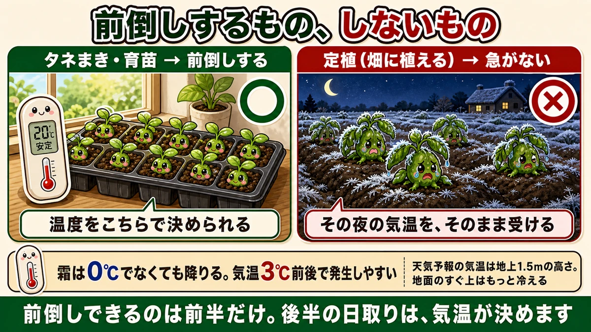
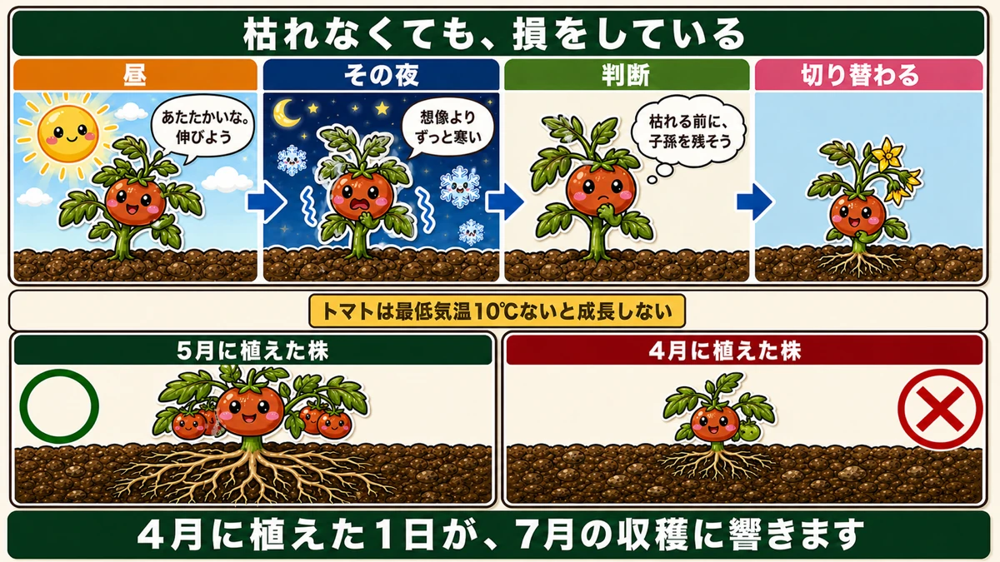
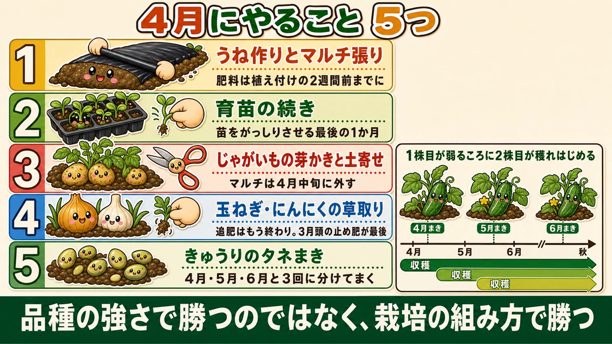

4月にまく・植える野菜｜夏野菜を植えるのはいつ？遅霜と根張り、苗の選び方と植え方、4月の畑仕事
どうも、8150（えいこう）です🌱 家庭菜園歴8年、理科の教員免許を持っていて、有機・無農薬で野菜を育てています。
📖 この記事の目次
この記事で分かること
- 夏野菜（トマト、なす、ピーマン、きゅうりなど）を、守るものなしで畑に植えるなら、5月の連休前後が一般的な目安です。
- 4月は、まだ遅霜（おそじも）が降りることがあります。霜に当たると、夏野菜は枯れてしまいます。
- 霜が降りなくても、夜の冷え込みで根の張りが悪くなることがあります。こちらは見た目では気づきにくい失敗です。
- 苗を「買う時期」と、畑に「植える時期」は分けて考えます。人気の品種は早く売り切れるので、早めに買って、植える日まで手元で育てる方法もあります。
- どうしても早く植えたいなら、ビニールトンネル、不織布、袋で作る「あんどん」などで守ります。ただし、守っていても枯れることはあります。
- 4月は、畝作りと元肥、マルチ張り、苗選びの準備など、5月の植えつけに向けた「準備の月」です。
4月になると、ぽかぽか暖かい日が増えてきますよね。ホームセンターの店先にも、トマトやなす、きゅうりの苗がずらりと並びはじめます。
「暖かくなったし、苗も売っているし、もう植えていいのかな」。そう思う方は多いと思います。
でも、4月の畑には、まだ落とし穴があります。この記事では、夏野菜を植える時期の考え方と、4月のうちにやっておきたい準備を、順番に書いていきます。説明が分かれているところは、両方の考え方を並べておきますね。

早見：4月の畑の基本（ひと目で分かる目安）
夏野菜の植えつけ時期の目安
- 守るものなしで植える：5月の連休前後（地域によって前後する）
- 早くて4月下旬から。4月中旬は霜の心配がまだ大きい
- 4月中旬に植えるなら：あんどんやトンネルなどで守る
- 初めて育てる方：4月の終わりから5月の連休あたりがおすすめ
4月にやること
- 畝作りと元肥（植える2週間前までが目安）
- マルチを張って、地温を上げておく
- 苗の準備（自分で育てている苗の世話／買う苗の本数と品種を決める）
- じゃがいもの芽かき
- 玉ねぎの病気の株を抜く、追肥は控える
- ねぎの苗を植える
苗を選ぶときに見るところ
- 茎が太く、葉と葉のあいだが詰まっている（ずんぐりした形）
- 葉に虫食いや病気のあとがない
- 同じ値段なら、大きいポットのもの
- 病気に強くしたいなら、接ぎ木苗（少し高い）
なぜ4月に植えるのは早いのか
育苗と、畑に植えるのは別のこと
夏野菜は、早めにタネをまいて苗を育てておく「前倒し」がよく紹介されます。ここで分けて考えたいのが、苗を育てることと、畑に植えることです。
- 苗を育てる（育苗）：家の中や簡易な温室など、温度をある程度こちらで調整できる場所で行う。寒い日は取り込める
- 畑に植える（定植）：外で行う。一度植えたら動かせないので、その夜の冷え込みをそのまま受ける
前倒しできるのは、苗を育てるほうです。畑に植える日は、気温に合わせて決めます。
霜に当たると、夏野菜は枯れる
夏野菜は、霜に当たると枯れてしまいます。そして霜は、遅い時期でもたまに降りることがあります。特に4月の初めごろは、「暖かくなったからもう植えよう」と思っても、まだ霜が降りる可能性があります。
昔から「八十八夜の別れ霜」という言葉があります。立春から数えて88日目ごろ（5月2日ごろ）を過ぎると、ようやく霜が降りなくなる、という意味です。夏野菜の植えつけが、5月の連休前後と言われるのは、この言葉とも重なります。
霜が降りなくても、低い気温で傷む
こわいのは霜だけではありません。霜が降りないくらいの夜でも、気温が低いと、植えたばかりの苗が弱ったり、枯れたりすることがあります。小さな苗ほど、寒さの影響を受けやすい、と説明されます。
ビニールトンネルをかけて、さらに不織布もかけていたのに、苗が寒さで枯れてしまった、という農家さんの話もあります。4月の寒さは、それくらい油断できません。

枯れなくても、根の張りが悪くなる
もうひとつ気をつけたいのが、枯れずに生き残った場合です。
寒い時期に植えると、苗の根の張りが悪くなることがある、と説明されます。寒さで「このままでは危ない」と感じた苗が、根や葉を育てるより先に、花をつけて子孫を残すほうに力を回してしまう、という説明をする人もいます。
根の張りが悪い株は、吸える水や養分が少なくなります。見た目は普通に育っているように見えても、夏になって実をたくさんつける時期に、力が足りなくなることがあります。
夏野菜は、夜の気温を見ている
夏野菜の育ち方を考えるときは、昼の暖かさより、夜の冷え込み（最低気温）を見ることが大切です。
トマトは、最低気温が10度くらいないと育ちが進まない、という説明があります。一方で、最低気温が8度を上回っていれば植えられる、8度を下回る日が5日以上続くと危ない、という説明もあります（あとで書きます）。どちらにしても、「昼が暖かいから大丈夫」とは言えない、ということです。
「桜が咲いてから1か月」という目安
植える時期の目安として、桜の開花からだいたい1か月後くらいになると、最低気温が8度を下回る日が少なくなってくる、という説明があります。
カレンダーの日付は地域によって当てはまらないことがありますが、桜の開花は、その土地の春の進み具合を表しています。自分の住んでいる地域で桜が咲いた日を覚えておいて、そこから1か月後を目安にする、という考え方は分かりやすいと思います。
4月下旬でも、朝晩は冷える
4月の下旬になると、関東あたりでは霜が降りる可能性はかなり低くなってきます。それでも、朝晩はまだ冷え込みます。最低気温が10度を下回る日もある、と説明されます。
4月下旬に植える場合も、あんどんや不織布のトンネルで、寒さ対策をしておくと安心です。中間地の愛知県でも、4月の夜に10度を下回り、7〜8度まで下がることがある、という話もあります。
それでも、4月に苗が売られている理由
早く植えたい人のために売っている
「4月に植えるのが早いなら、なぜお店で売っているの？」と思いますよね。
これは、早く苗がほしい人の需要に応えているから、と説明されます。ハウスやトンネルで温度を管理できる人や、早めに買って手元で育てたい人にとっては、4月の苗は必要なものです。売っていること自体が間違い、というわけではありません。
人気の品種は、早く売り切れる
「5月まで待っていたら、ほしい品種の苗が売り切れてしまう」。これも本当です。人気の品種や珍しい品種は、早く売り切れてしまうことがあります。
そういう場合は、苗を早めに買っておいて、畑に植える日まで手元で育てる、という方法があります。苗を買う時期と、畑に植える時期を分けて考える、ということです。
早めに買うなら、まだ若い苗を
苗は、花のつぼみがつきはじめたくらいの大きさで畑に植えるのがよい、と説明されます。根が張りやすいからです。
4月の初めに苗を買うなら、まだ花がついていない、若い苗を選んで、植える日まで水やりをしながら育てておくのがよい、という説明があります。花がたくさんついた大きな苗を早くに買うと、植える時期まで待つあいだに、育ちすぎてしまうことがあります。
「売っているから植えどき」とは限らない
気をつけたいのは、「お店に並んでいるのだから、今が植えどきなのだろう」と考えてしまうことです。初めて野菜を育てる方ほど、そう受け取りやすいと思います。
4月に夏野菜の苗の販売を見合わせているお店もある、という話もあります。苗が並んでいるかどうかではなく、自分の地域の気温を見て、植える日を決めてください。
買った苗を、植える日まで待たせるには
早めに苗を買った場合は、植える日まで手元で元気に保つ必要があります。
- 昼は、日当たりのよい場所に置く
- 夜に冷えこみそうな日は、家の中や軒下に取り込む
- ポットの土が乾いたら、水をやる
- 根がポットの中で回ってきたら、ひと回り大きなポットに植え替える
植えどきの目安は、花のつぼみが見えはじめたころ、という説明があります。つぼみが見えてきて、夜の冷え込みもおさまってきたら、いよいよ畑に植える準備をしましょう。
どうしても早く植えたいとき
守る道具
事情があって早く植えたいときは、苗を寒さや風から守る道具を使います。
- ビニールトンネル：畝全体をおおって、中を暖かく保つ
- 不織布：トンネルの上からかけたり、苗に直接かけたりして保温する
- あんどん：苗のまわりを、ごみ袋や肥料の袋で囲む。袋の底を切って筒にし、支柱で立てる
- 防虫ネット：苗のまわりを囲んで、冷たい風をやわらげる
守っていても、絶対ではない
守る道具を使った苗が、予報で0度の夜を越せた、という試験の例もあります。一方で、トンネルと不織布をかけていても枯れてしまった、という経験も語られています。
道具を使えば、必ず霜や寒さを防げる、というわけではありません。早く植えるほど、失敗の可能性も上がる、と考えておいてください。
4月中旬に植えるなら
4月中旬ごろは、まだ苗が根づきにくい気温だ、と説明されます。この時期に植えるなら、あんどんなどの対策をして植えるのがよい、という説明があります。
初めて夏野菜を育てる方は、4月の終わりから5月の連休あたりに植えるのが安心です。手間をかけたくないなら、5月まで待つ。それで何の問題もありません。
4月にやる準備の手順
ここからは、5月に植えるための準備を、順番に書いていきます。
手順1：何をどれだけ植えるか決める
苗を買いに行く前に、畑の畝に何株植えられるかを考えておきます。売り場でたくさんの苗を見ると、ついあれもこれもと買いたくなりますよね。でも、植える場所が足りなければ、苗が余ってしまいます。
畝の長さと、野菜ごとの株と株のあいだの広さから、植えられる数を先に決めておきましょう。
手順2：畝を作って、元肥を入れる
植える場所の土を耕して、畝を作ります。たい肥や肥料（元肥）を入れるなら、植える日より前に済ませておきます。
元肥の分解には時間がかかるので、植えつけの2週間前までには入れておく、という説明があります。肥料を入れてすぐに植えると、分解の途中で根が傷むことがあるからです。待つ期間は説明によって違います（あとで書きます）。
手順3：マルチを張る
元肥を入れた畝には、マルチ（畝の表面をおおうシート）を張っておきます。マルチを早めに張っておくと、中で肥料の分解が進み、地温も少しずつ上がっていく、と説明されます。
マルチは、土の表面にぴったり密着させて張ります。すそは土の中にしっかり埋めこんで、風で飛ばされないようにします。土とのあいだにすき間があると、保温や保湿、雑草を防ぐ効果が十分に出ません。
手順4：元肥が間に合わないときは「穴肥」
土作りが間に合わなかった場合は、植える穴だけに肥料を入れる方法（穴肥）があります。
- 植え穴を、ポットより深く掘る
- 穴の底に肥料を入れる
- その上に、肥料の入っていない土をかぶせてふたをする
- その上に苗を植える
肥料が直接根にふれないようにするのがポイントです。ただし、この方法は、植えたばかりのころは根が肥料に届かず、育ちが進んで根が広がったころには、まわりに肥料が少ない、という弱点があります。追肥をタイミングよく行う必要がある、と説明されます。
手順5：苗を選ぶ
苗を買うときは、次のところを見ます。
- 茎が太く、葉と葉のあいだが短い。全体にずんぐりした形のもの
- ひょろっと細長く伸びた（徒長した）苗は避ける
- 葉に虫食いや病気のあとがないもの。葉の裏も見る
- 同じ値段なら、ポットの大きいもの（土が多く、根もよく張っている）
- ポットの土が乾きすぎていないもの
葉に、白っぽいまだら模様のようなあとがついている苗は、寒さで傷んだ（低温障害）可能性があります。軽いものなら、その後暖かくなれば問題ないことが多い、と説明されます。ひどいものは避けて、ほかの苗を選んでください。
手順6：接ぎ木苗にするか決める
苗には、「自根苗（じこんなえ）」と「接ぎ木苗（つぎきなえ）」があります。接ぎ木苗は、病気に強い別の株（台木）に、育てたい野菜をつないだ苗です。根元に、つなぎめを留めるクリップがついているので見分けられます。
接ぎ木苗は少し値段が高いですが、病気や害虫に強いので、おすすめされることが多いです。
手順7：植える前に、苗に水を吸わせる
植えたばかりの苗は、根がまだ畑の土になじんでいないので、すぐには水や養分を吸えません。だから、植える前にポットの土全体に水を吸わせておくことが大切です。
- ポットごと水に30分ほどつけておく
- 時間がなければ、植え穴に水を注ぎ、水が引いてから植える
手順8：深さを合わせて植える
植え穴にポットごと入れてみて、ポットの土の高さと畝の土の高さが同じくらいになるように、穴の深さを調整します。
深く植えすぎると、水がたまりやすくなります。接ぎ木苗の場合は、つなぎめを土に埋めないようにします。深く埋めると、台木のほうから芽が出てくることがあるからです。
手順9：すき間なく土を寄せ、水をたっぷり
苗を植えたら、まわりから土を寄せて、すき間が残らないように手でしっかり押さえます。根のまわりにすき間があると、根が乾いたり、土になじみにくくなったりします。
植えたあとは、もう一度たっぷり水をやります。ポットの中にあった根が、畑の土へ早く伸びていく（根づく）のを助けます。
手順10：風と寒さから守る
植えたあと、強い風や寒い日が続くようなら、防虫ネットで囲んだり、あんどんを作ったりして、苗を守ります。5月になると寒さはあまり気にしなくてよくなりますが、強い風が吹くことはあります。仮の支柱を立てて、苗が風で揺さぶられないようにしておくと安心です。
きゅうりやすいかの畝は、浅めに耕す
きゅうりやすいかは、浅いところに根を張る野菜です。そのため、深く耕すより、浅めに耕したほうが肥料が効きやすい、という説明があります。
畝の高さは10cmくらい、水はけの悪い場所なら15cmくらいと少し高めにして、黒いマルチを張って植えつけを待つ、という例があります。土作りは、遅くとも4月の中旬までに済ませておく、と説明されます。
きゅうりの苗の選び方
きゅうりの苗は、次のようなものを選ぶとよい、という説明があります。
- 葉と葉のあいだ（節と節のあいだ）が開きすぎていない
- 葉の緑が濃く、厚みがある
- 本葉が3〜4枚出ている
初めて育てる方には、接ぎ木の苗がおすすめ、という説明もあります。
植えたら、すぐに支柱で支える
なすやピーマンは、植え終わったら株元に水をたっぷりやり、すぐに支柱を立てて、苗と支柱をひもで結んでおく、という手順が紹介されています。植えたばかりの苗は、風で揺れると根が切れやすいので、早めに支えてあげることが大切です。
きゅうりやすいかの虫よけ
4月の後半になると、きゅうりやすいかの葉を食べるウリハムシが出てきます。植えたばかりの小さな苗は、葉を食べられると一気に弱ってしまいます。
植えたあとは、防虫ネットやあんどんで苗を囲んでおくと、寒さよけと虫よけの両方に役立ちます。とうがらしを焼酎に漬けた液を、虫よけとして使う例も紹介されています。

4月の畑仕事
夏野菜の準備のほかにも、4月にやっておきたい作業があります。
自分で育てている苗の世話
2月や3月にタネをまいて苗を育てている方は、苗の世話が続きます。小さな育苗トレーで育てている苗は、そのままだと栄養が足りなくなるので、途中で大きめのポットに移します。
苗を育てる期間の目安は、トマトで2か月ほど、きゅうりは40日ほどと短め、という説明があります。植える日から逆算して、苗の大きさを見ながら世話を続けてください。
じゃがいもの芽かき
2月や3月に植えたじゃがいもから、芽がたくさん出てきます。芽が多すぎると、いもが小さくなるので、元気な芽を残して、ほかの芽をかき取ります。3本ほどに減らす、という説明があります。
玉ねぎの管理
秋に植えた玉ねぎは、春になると大きく育ってきます。この時期は、追肥を控える、という説明があります。
葉が2つに折れたようになっていたり、病気が出ていたりする株は、早めに抜いて処分します。また、畑が水びたしにならないよう、水はけにも気をつけましょう。
ねぎの苗を植える
春は、ホームセンターなどでねぎの苗が売られる時期です。ねぎは、ほかの野菜とは植え方が違います。
- ほかの野菜：畝を高くして、そこに植える
- ねぎ：溝を深く掘って、その中に植える
ねぎが伸びてきたら、まわりの土を少しずつ寄せていきます。土寄せをくり返すと、土に埋まった白い部分が長く育ちます。植えたときに土を厚くかけすぎると病気が出やすくなるので、最初の土は薄めにする、という説明があります。
さつまいもの畝は、肥料を入れずに
さつまいもは、肥料を入れすぎると、葉やつるばかりが茂って、いもが育ちにくくなる（つるぼけ）ことがあります。さつまいもの畝は、肥料を入れずに耕して、畝を立てる程度にしておく、という説明があります。
夏野菜以外の植えつけ
夏野菜の注意は、4月にはすべての野菜を植えてはいけない、という意味ではありません。春のキャベツやブロッコリー、ねぎ、アスパラガスなど、4月に植えたり世話をしたりする野菜もあります。里芋やしょうがの芽出しを始める人もいます。育てる野菜ごとに、時期を確かめてください。
失敗の見分け方
植えた翌朝、苗の葉がしおれて黒っぽくなっていた
霜に当たった可能性があります。霜に当たった夏野菜は、回復しないことが多いです。苗を植え直す場合は、次は気温が上がってから植えるか、あんどんやトンネルで守ってください。
枯れはしないが、なかなか大きくならない
夜の冷え込みで根の張りが悪くなっているか、まだ根づいていない可能性があります。暖かくなるとともに育ちはじめることもあるので、しばらく様子を見てください。
植えた苗が、風で倒れていた
植えたばかりの苗は、根が浅いので風で倒れやすいです。仮の支柱を立てて、ひもでゆるく結んでおきましょう。風が強い日は、防虫ネットなどで囲むのも効果があります。
植えたあと、葉の色が悪くなった
元肥を入れてすぐに植えて、分解の途中で根が傷んだ可能性があります。次からは、植える日の2週間前までに元肥を入れておきましょう。
接ぎ木苗の根元から、違う芽が出てきた
接ぎ木のつなぎめを土に埋めてしまい、台木のほうから芽が出てきた可能性があります。台木から出た芽は、見つけたら早めにかき取ってください。
説明が分かれていること
いつから植えてよいか
- 守るものなしで植えるなら、5月の連休前後まで待つ、という説明
- 4月下旬から植えはじめ、遅れると収穫の始まりも遅れる、という説明
地域や、守る道具を使うかどうかで変わります。「4月は絶対にだめ」「4月なら誰でも大丈夫」のどちらでもなく、自分の地域の気温と、使える道具で決めてください。
苗をいつ買うか
- まだ買わずに、植える時期になってから買う、という考え方
- 人気の品種は売り切れるので、早めに買って手元で育てる、という考え方
早めに買う場合は、まだ花がついていない若い苗を選び、植える日まで世話をする手間がかかります。
トマトの「寒さ」の目安
- 最低気温が10度くらいないと育ちが進まない、という説明
- 最低気温が8度を上回っていれば植えられる、8度未満が5日以上続くと危ない、という説明
育ちが進むかどうかの話なのか、植えてよいかどうかの話なのかで、数字の意味が違います。どちらも、昼ではなく夜の気温を見る、という点は共通しています。
元肥を入れてから、どれくらい待つか
- 植えつけの2週間前までに入れる、という説明
- 理想は2週間以上、最低でも1週間は空ける、という説明
- トマトは3週間くらい前に入れる、という説明
入れる肥料の種類や量によって変わります。迷ったら、早めに入れておくのが安心です。
守る道具を使えば大丈夫か
- トンネルと不織布で守っていても枯れた、という経験
- 守る道具の中の苗が、0度の予報の夜を越えた、という試験
どちらも本当にあったことです。道具は失敗の可能性を下げるもので、なくすものではない、と考えてください。
植えるとき、根をほぐすか
- なすの苗で、ポットの中で巻きすぎた根を少しほぐしてから植える、という説明
- 白菜の苗で、根を切ると成長が止まるので、ほぐしたり切ったりしない、という説明
野菜も季節も違う話です。根をやさしくほぐすことと、根を切ることは同じではありません。根がポットの形にがちがちに固まっているときだけ、底のほうを軽くほぐす、くらいに考えておくのが無難です。
植えたあとの水やり
- トマトは、植えるときと植えた直後に水をたっぷりやり、そのあとは控えめにする、という説明
- 秋の白菜は、根づくまで朝か夕方に水を切らさない、という説明
これも、野菜と季節で条件が違います。春の夏野菜は、植えたときにたっぷりやったら、あとは土の乾き具合を見て、という考え方でよいと思います。
よくある質問
Q. 暖かい地域でも、5月まで待ったほうがいいですか？
A. 暖かい地域では、もう少し早く植えられることもあります。大切なのは、カレンダーの日付より、その年のその地域の夜の気温です。近くの園芸店や、ご近所で畑をしている人に、このあたりではいつごろ植えているかを聞いてみるのが確かです。
Q. 4月に苗を買ってしまいました。どうすればいいですか？
A. 植える時期まで、手元で育てておきましょう。日当たりのよい場所に置き、寒い夜は家の中や軒下に取り込みます。土が乾いたら水をやります。ポットが小さくて根が回ってきたら、ひと回り大きなポットに移すと、植えるまで元気に保てます。
Q. 天気予報の最低気温が5度なら、霜は降りませんか？
A. 天気予報の気温は、地面から少し離れた高さで測っています。晴れて風のない夜は、地面の近くがそれよりずっと冷えるので、予報の最低気温が0度より高くても、畑に霜が降りることがあります。4月に植えるなら、霜の注意報も確かめてください。
Q. あんどんは、何で作ればいいですか？
A. ごみ袋や肥料の袋の底を切って筒にし、苗のまわりに支柱を4本ほど立てて、そこに袋をかぶせて囲みます。上は開けておきます。暖かくなってきたら、中が暑くなりすぎないように外してください。
Q. 苗を植えるのは、朝と夕方のどちらがいいですか？
A. トマトの植えつけを朝に行う、という説明があります。植えたあとに、その日のうちに根が落ち着く時間がとれるからです。ただし、真夏の暑い時期や、植える野菜によっては夕方がよいという説明もあります。春の夏野菜なら、暖かい日の午前中が無難です。
Q. 植えたあと、毎日水をやったほうがいいですか？
A. 植えた直後にたっぷり水をやったら、そのあとは土の乾き具合を見て水をやります。ただし、植えてすぐの乾燥には気をつけてください。トマトは、水やりのいちばんよいタイミングは朝、という説明があります。
Q. 接ぎ木苗と自根苗、どちらがいいですか？
A. 病気に強くしたいなら接ぎ木苗、値段をおさえたいなら自根苗です。同じ場所で同じ仲間の野菜（トマトやなすなどのナス科）を続けて育てている畑なら、接ぎ木苗を選ぶと安心です。
Q. きゅうりは、いつごろタネをまけばいいですか？
A. きゅうりは、苗を育てる期間が40日ほどと短めです。植えたい日から逆算して、タネをまく日を決めましょう。タネの袋には、まく時期と、育つのに適した温度が書いてあるので、まずは袋の裏を読んでみてください。
Q. 4月にタネを直接畑にまける野菜はありますか？
A. 野菜の中には、苗を育てて植え替えるのに向かず、直接畑にまくほうがよいものがあります。大根やにんじんのように、太い根がまっすぐ下に伸びる野菜（直根タイプ）です。春にまける品種もあるので、タネの袋で時期を確かめてください。
Q. トマトのわき芽は、いつ取ればいいですか？
A. わき芽を取ると、その切り口から雑菌が入りやすくなる、と説明されます。わき芽かきは、切り口が早く乾くように、晴れた日に行うのがおすすめです。植えたばかりの苗は、まず根づくのを待ってから、わき芽の世話を始めましょう。
Q. 苗を育てる土は、何を使えばいいですか？
A. 小さなトレーにタネをまくときは「種まき用の土」、大きめのポットに移すときは「育苗用の土」と、専用の土を使い分ける例があります。どちらもホームセンターで売られています。土は、使う前に少し湿らせておくと、扱いやすくなります。
Q. プランターでも、5月まで待ったほうがいいですか？
A. プランターは動かせるので、寒い夜は家の中や軒下に取り込むことができます。そのぶん、畑より少し早めに始めやすいのが強みです。ただし、外に出しっぱなしにするなら、畑と同じように夜の冷え込みに気をつけてください。
学ぶ🔬 4月の畑で起きていること
ここからは、4月の畑で起きていることのしくみを、少しだけ深く書いておきます。読み飛ばしても大丈夫です。
なぜ、地面の近くはより冷えるのか
晴れて風のない夜、地面は、昼のあいだにためた熱を、空に向かってどんどん逃がしていきます。これを放射冷却（ほうしゃれいきゃく）と呼びます。雲があると、雲が毛布のように熱を受け止めてくれますが、晴れた夜は、熱がそのまま空へ逃げていきます。
地面が冷えると、そのすぐ上の空気も冷やされます。気象台の気温は、地面から1.5mほどの高さで測っています。だから、地面のすぐ上は、予報で出る気温より低くなることがあるんです。苗の葉があるのは、まさにこの、いちばん冷える高さです。
「根づく」とは、どういうことか
ポットで育てた苗の根は、ポットの土の中でぐるぐると回っています。畑に植えたあと、この根が、ポットの外の畑の土に向かって伸びていくことを、「活着（かっちゃく）」、つまり根づく、と言います。
根づくまでのあいだ、苗は、ポットの中にあった根だけで水を吸っています。だから、植える前にポットの土に水をしっかり吸わせておくことや、根のまわりにすき間を作らないことが大切なんですね。寒いと根の伸びがゆっくりになるので、根づくまでの時間が長くなり、そのぶん苗は弱りやすくなります。
接ぎ木苗のしくみ
接ぎ木苗は、病気に強い、根の丈夫な株（台木）の上に、おいしい実をつける品種（穂木）をつないで作った苗です。
根は台木のものなので、土の中の病気に強くなります。実は穂木のものなので、育てたい品種の実がなります。それぞれのよいところを組み合わせた苗、というわけです。
だから、つなぎめを土に埋めてしまうと、穂木のほうからも根が出て、せっかくの台木の強さが活かせなくなったり、台木から芽が出てきたりすることがあります。植えるときは、つなぎめを土の上に出しておきましょう。
苗作りに向く野菜、向かない野菜
野菜の根には、大きく分けて2つのタイプがあります。
- 直根タイプ：大根のように、太い根がまっすぐ下に伸び、そのまわりに細かい根が出るもの
- ひげ根タイプ：細い根が、たくさん広がるもの
直根タイプの野菜は、苗を植え替えるときに太い根が傷むと、うまく育たないことがあります。だから、大根やにんじんは、畑に直接タネをまくのが基本です。
一方、トマトやなす、きゅうりなどは、苗を育てて植え替えることができます。苗作りをすると、小さな場所で水やりや虫よけがしやすく、いちばん大事な最初の育ちを守りやすい、と説明されます。
八十八夜は、昔の人の観察
「八十八夜の別れ霜」は、立春から数えて88日目ごろに、霜の季節が終わる、という昔からの言い伝えです。
昔の人は、天気予報がなかった時代に、毎年の霜の時期を観察して、この言葉を残しました。もちろん、地域や年によっては、もっと遅く霜が降りることもあります。それでも、夏野菜を植える時期を考えるときの、ひとつの目安になる言葉です。
黒いマルチで、地温が上がるしくみ
黒いマルチを張ると、地温（土の温度）が上がります。これには、2つの理由があります。
1つ目は、黒い色が太陽の光をよく吸収して、熱に変えるからです。黒い服を着ると、日なたで暑く感じるのと同じです。マルチが受け取った熱が、すぐ下の土に伝わります。
2つ目は、マルチが土の表面をおおって、水分が蒸発するのを防ぐからです。水は蒸発するときに、まわりから熱をうばいます。水分の蒸発が減ると、そのぶん土が冷えにくくなります。
夏野菜は、暖かい土が好きです。植える前からマルチを張っておくと、苗が植えられたときには、すでに土が暖まっている、というわけです。
まとめ
ここまで読んでくださって、ありがとうございます！
4月の畑のポイントを、もう一度まとめておきます。
- 前倒しするのは苗を育てるほう。畑に植える日は、気温で決める
- 守るものなしで植えるなら、5月の連休前後が目安
- 4月は遅霜が降りることがある。霜が降りなくても、夜の冷え込みで根の張りが悪くなる
- 夏野菜は、昼の暖かさより夜の冷え込みを見る
- 苗を買う時期と、植える時期は分けて考えてよい。早く買うなら若い苗を
- 早く植えるなら、トンネル・不織布・あんどんで守る。ただし絶対ではない
- 元肥は植える2週間前までに。マルチは早めに張って、土に密着させる
- 苗は、ずんぐりして、虫食いや病気のあとがないものを
- 植える前にポットに水を吸わせ、深さを合わせ、すき間なく植えて、たっぷり水を
- じゃがいもの芽かき、玉ねぎの病気の株の処分、ねぎの植えつけも4月の仕事
4月は、5月の植えつけに向けた「準備の月」です。あわてて植えるより、畝と苗をしっかり整えておくほうが、夏の収穫につながります。焦らず、一つずつ進めていきましょう。
まずは、夏野菜を植える畝を決めて、元肥とマルチの準備から始めてみてください🍅
簡易温室
4月に苗を買ってしまったときの逃げ場になります。夜だけ入れて、朝出す。これができるなら前倒しも可能です。
![[商品価格に関しましては、リンクが作成された時点と現時点で情報が変更されている場合がございます。]](https://hbb.afl.rakuten.co.jp/hgb/56e737da.59472026.56e737db.311c7b4f/?me_id=1280948&item_id=10022268&pc=https%3A%2F%2Fthumbnail.image.rakuten.co.jp%2F%400_mall%2Fweiwei%2Fcabinet%2Fshouhin-image03%2Faah004-r.jpg%3F_ex%3D240x240&s=240x240&t=picttext "[商品価格に関しましては、リンクが作成された時点と現時点で情報が変更されている場合がございます。]")

トンネルビニール
遅霜と北風から守ります。連休までは、いつ冷え込んでもおかしくありません。
![[商品価格に関しましては、リンクが作成された時点と現時点で情報が変更されている場合がございます。]](https://hbb.afl.rakuten.co.jp/hgb/56bc237a.e97551b1.56bc237b.2513ed10/?me_id=1310260&item_id=10001120&pc=https%3A%2F%2Fthumbnail.image.rakuten.co.jp%2F%400_mall%2Fdiokasei%2Fcabinet%2F010maruti-bini-ru%2Fbini-ruopri%2F413190.jpg%3F_ex%3D240x240&s=240x240&t=picttext "[商品価格に関しましては、リンクが作成された時点と現時点で情報が変更されている場合がございます。]")
穴あきマルチ
4月のうちに張って、地温を上げておきます。土が温まっていないところに植えるのが、いちばんよくない。
![[商品価格に関しましては、リンクが作成された時点と現時点で情報が変更されている場合がございます。]](https://hbb.afl.rakuten.co.jp/hgb/55521906.a3595d78.55521907.92994d18/?me_id=1225177&item_id=10035007&pc=https%3A%2F%2Fthumbnail.image.rakuten.co.jp%2F%400_mall%2Fssn%2Fcabinet%2F02584092%2F07223762%2F4980356008386_1.jpg%3F_ex%3D240x240&s=240x240&t=picttext "[商品価格に関しましては、リンクが作成された時点と現時点で情報が変更されている場合がございます。]")
牛ふん堆肥
植える2週間前に入れておくもの。4月は準備の月なので、ここが本番です。
![[商品価格に関しましては、リンクが作成された時点と現時点で情報が変更されている場合がございます。]](https://hbb.afl.rakuten.co.jp/hgb/55e75fe5.20db4cd1.55e75fe7.d1ec32cc/?me_id=1194164&item_id=10000517&pc=https%3A%2F%2Fthumbnail.image.rakuten.co.jp%2F%400_mall%2Fgardening%2Fcabinet%2Fhiryousennyouhiryo%2Fdsc_2803.jpg%3F_ex%3D240x240&s=240x240&t=picttext "[商品価格に関しましては、リンクが作成された時点と現時点で情報が変更されている場合がございます。]")